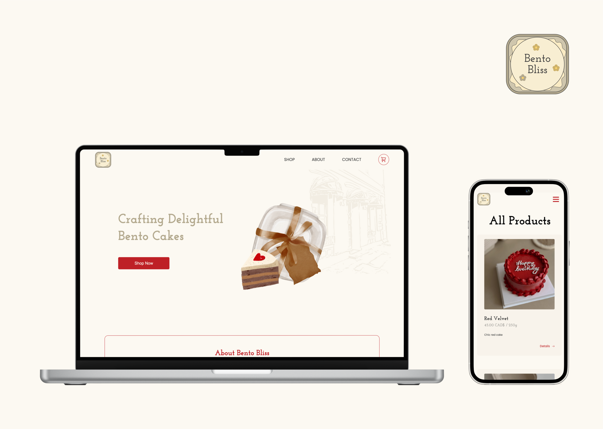

Work
View my projects

Digital Passport Program
A digital intervention for Vancouver International Film Festival to enhance in-person experience for the younger community and bring Gen Z attendees together in the digital era.
view project

Bento Bliss Website
A responsive website designed and developed for Bento Bliss, a fictional company specializing in bento cakes for special small occasions.
view project